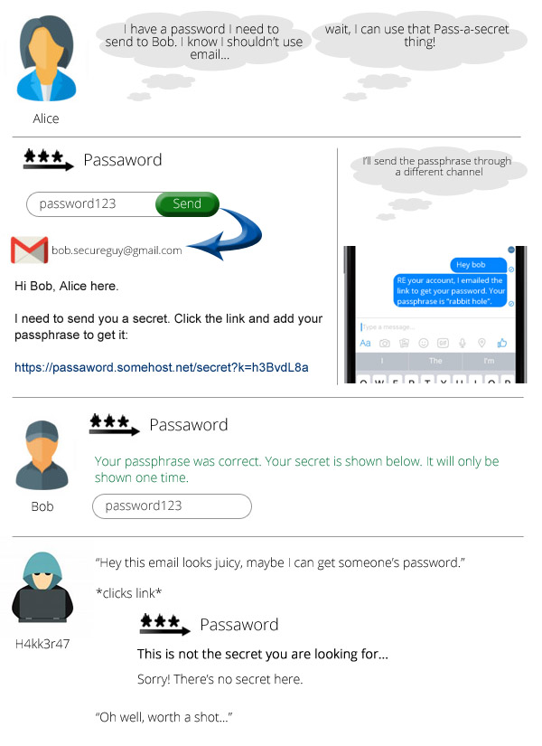

Passaword 0.0.1 Docs¶
What is Passaword?¶
Passaword is a package that helps you set up a one-time secret sharing platform.
Its purpose is to allow people to securely transmit secret data, such as passwords, via insecure communication channels, and have that secret self-destruct on decryption.
No more sending passwords via separate emails or SMS messages.
The difficulty with this kind of service online is often that you can’t trust the servers they run on. With this tool, you can set up your own Passaword server with open-sourced code and be 100% sure of your confidentiality.